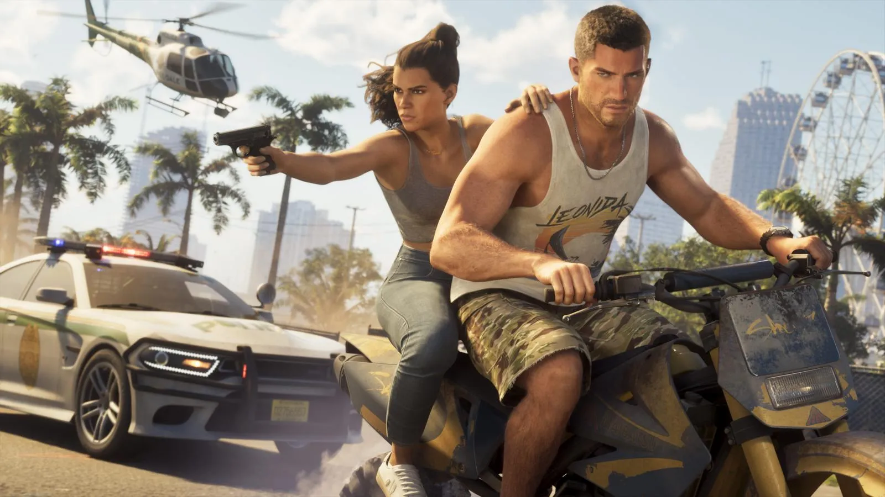

Как мир готовится к GTA 6: отпуска, армия и закрытые компании
Опубликовано:
- В США заявок на отпуск на 19 ноября почти на 13% больше, чем в такие же дни прошлых лет (BambooHR).
- В Великобритании этот день хотят взять около 2,1 млн работников (CharlieHR).
- Батальон армии США в Форт-Стюарте даёт 4 дня отпуска тем, кто продлит контракт до 14 ноября.
- Компания Burger Motorsports из Калифорнии 19 ноября закрывается целиком.
Отпуск на 19 ноября
GTA 6 выходит в четверг, 19 ноября 2026 года (Дата выхода GTA 6: 19 ноября 2026 — во сколько, на чём и что было до этого), — и работодатели уже видят это по заявкам. По данным HR-сервиса BambooHR (октябрьский отчёт), запросов на оплачиваемый отпуск на 19 ноября почти на 13% больше, чем на сопоставимые даты в 2024 и 2025 годах. В опросе 1530 работников в США 18% офисных сотрудников сказали, что возьмут этот день: среди поколения Z — 32%, среди миллениалов — 27%.
Опрос GameSquare (его приводит Fast Company, 20 октября) среди 1000 работающих американских геймеров: 39% собираются заранее попросить отгул, 36% допускают, что возьмут больничный. В Великобритании, по оценке сервиса CharlieHR, 19 ноября хотят взять около 2,1 млн работников — примерно 7%.
Армия США
В августе 2026 года по соцсетям разошёлся приказ 9-го бригадного инженерного батальона (3-я пехотная дивизия, Форт-Стюарт, штат Джорджия). Его подписал подполковник Райан Ходжсон: каждый солдат, который подпишет контракт на продление службы с 1 августа по 14 ноября 2026, получит специальный пропуск на 4 дня — под выход GTA 6.
- Продлить нужно минимум на 2 года, максимум — на 6.
- Право на бонус было у 130 солдат батальона, 20 из них выбрали именно его (данные армии, август 2026).
- Представитель дивизии объяснил: поощрения за продление службы — обычное дело, а этот вариант придумал новый карьерный консультант, чтобы связать бонус с тем, что интересно солдатам.

Компания закрывается
Калифорнийская компания Burger Motorsports, которая делает запчасти для тюнинга машин, ещё в июне объявила: 19 ноября она приостанавливает работу. Причина — сразу несколько сотрудников предупредили, что берут этот день, чтобы играть. Вместо работы в неполном составе компания дала выходной всем.
В уведомлении компания предупредила о задержках в поддержке, обработке заказов, доставке и соцсетях и пообещала вернуться к обычной работе, когда сотрудники изучат первые локации игры или пройдут хотя бы одну миссию.
История с Reddit
В начале ноября на Reddit (r/GTA6unmoderated) пользователь рассказал, как в ресторане подслушал разговор пары. Девушка спросила: «Ты взял сколько отпуска? Ради видеоигры?!» Парень ответил: «Ты не понимаешь, я ждал этого 13 лет». Автор поста написал, что постеснялся вмешаться, но хочет сказать тому парню: «Я тебя понимаю, бро».
13 лет — это не преувеличение: GTA 5 вышла 17 сентября 2013 года, а GTA 6 выходит 19 ноября 2026-го. Ребёнку, родившемуся в день выхода GTA 5, к релизу GTA 6 будет 13 лет.
Источники: BambooHR, октябрь 2026; GameSquare / Fast Company, 20.10.2026; CharlieHR (через Workplace Journal) — по IBTimes UK, 04.11.2026; Newsweek и CBS News, август 2026 — приказ 9-го бригадного инженерного батальона; NewsBytes, 19.06.2026, Insider Gaming — Burger Motorsports; Reddit r/GTA6unmoderated (по IBTimes UK).
Каждый день — одно сравнение: кадр игры рядом с реальным фото. Подписывайтесь:
YouTubeInstagramTikTok